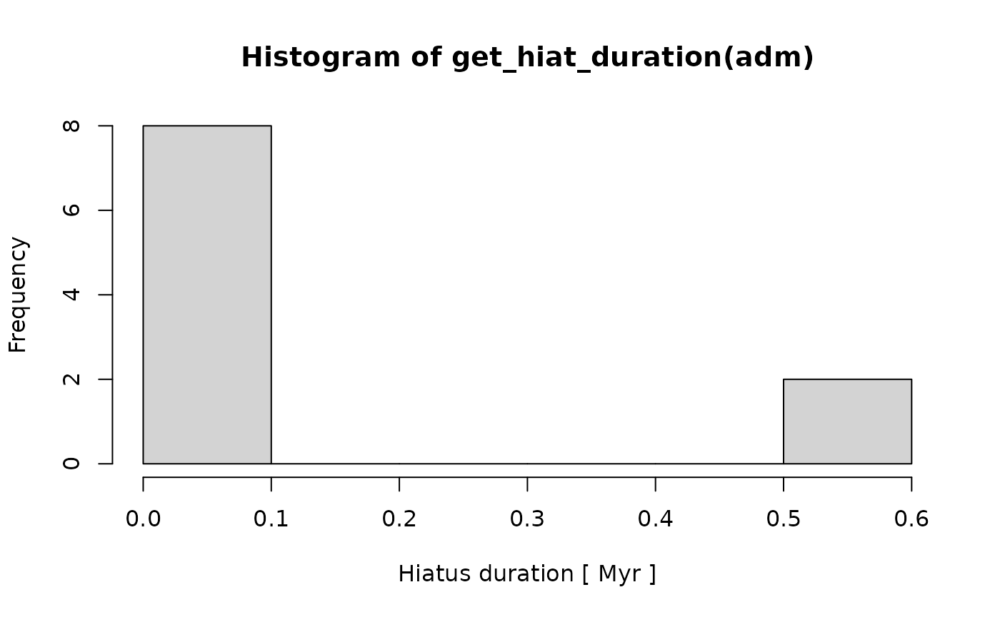

Overview
Welcome to the StratPal package. This vignette provides
an overview of the structure of the package and preliminaries needed to
efficiently use it. We go through installation, dependencies, provide an overview of
the available example data, piping, and working with age-depth models.
If you want to skip the introduction, you can also get started right away.
Throughout the vignettes there are several tasks that you can solve. They are not required for understanding the functionality of the package. Their aim is to explore the available models and data and develop an intuition for stratigraphic paleobiology.
Installation
GitHub
To install the StratPal package from GitHub, first
install the remotes package by running
install.packages("remotes")in the R console. Then, run
remotes::install_github(repo = "MindTheGap-ERC/StratPal",
build_vignettes = TRUE,
ref = "HEAD",
dependencies = TRUE)to install the latest stable version of the package and all its dependencies.
Dependencies
The StratPal heavily relies on the age-depth modeling
tools provided by the admtools package, which is
automatically installed when you install
StratPal.
To use its functionality, you need to run
before running any of the examples. Specifically, this is needed for
plotting of age-depth models and trait evolution. Below we provide a
brief overview of the functionality of the admtools package
we need. If you want more information, you can browse through the
package vignettes using
browseVignettes(package = "admtools")or by visiting the package website at https://mindthegap-erc.github.io/admtools/.
Example data
StratPal comes with synthetic example data, which
contains model parameters and outputs of a carbonate platform simulated
using CarboCAT Lite (Burgess (2013), Burgess (2023)). The data is stored in the
variable scenarioA, which is automatically available when
the package is loaded. The structure of the data is described under
?scenarioA.
The data is taken from scenario A in Hohmann et al. (2023), the modeling procedure is described in detail in Hohmann et al. 2024, see therein for a chronostratigraphic diagram and a transect through the carbonate platform.
The data contains information on the eustatic sea level curve used for the model run, elapsed model time, as well information on accumulated sediment thickness, water depth, and bed thicknesses and facies at locations 2, 4, 6, 8, 10, and 12 km from shore in the simulated carbonate platform.
As an example, here is the eustatic sea level curve used for the model run:
plot(x = scenarioA$t_myr,
y = scenarioA$sl_m,
type = "l",
xlab = "Time [Myr]",
ylab = "Eustatic sea level [m]",
main = "Sea level curve used as model input")
Piping
In the vignettes of the StratPal package, we use the
base R pipe operator |>. While this is not
required to run the package, it simplifies the code and makes the
underlying logic of a modeling pipeline clearer.
This functionality is available from R version 4.2 on.
Motivation and usage
Consider the following code for simulating and plotting a random walk
using the random_walk function:
set.seed(42) # set seed for computational reproducibility
t = seq(0, 1, by = 0.01) # times where we evaluate the random walk
l = random_walk(t) # simulate the random walk
plot(l, type = "l") # line plot of the resultsThis code does the job, but it has some flaws: We introduced a lot of
intermediate variables, which makes it hard to trace the logic of what
we are trying to achieve: plotting a random walk. Using the pipe
operator |> we can clarify the logic and simplify the
code:
set.seed(42) # set seed for computational reproducibility
seq(0, 1, by = 0.01) |> # define times of simulation
random_walk() |> # simulate random walk
plot(type = "l") # plotYou see that the code does the same thing: it plots a random walk,
but it does so in one step without intermediate variables by chaining
together the commands using the pipe |>. This becomes a
powerful tool once we combine more and more components into longer
modeling pipelines. It also makes the code readable, as you can simply
read it from left to right, without having to track any intermediate
steps.
Semantically, you can read the |> as “take the data
on the left of |> and use it as the first argument in
the function to the right of |>.
Advanced usage
You can also use |> to pass arguments that are not in
the first place. For this, simply replace the argument with a underscore
_:
# calculate deciles of normal distribution
seq(0, 1, by = 0.1) |>
quantile(x = runif(100), p = _) # pass left hand side to the p argument
#> 0% 10% 20% 30% 40% 50% 60%
#> 0.01754832 0.08499473 0.15879393 0.25042315 0.33077722 0.41258062 0.48894916
#> 70% 80% 90% 100%
#> 0.55111005 0.76271437 0.88512802 0.99655268Age-depth models
The StratPal package use of age-depth modeling
functionality from the admtools package. Here we go through
some basics of dealing with age-depth models. For more details on
available functionality you can browse through the package vignettes
using
browseVignettes(package = "admtools")or visit the package website at https://mindthegap-erc.github.io/admtools/.
To get started, first load the package using
The StratPal package comes with some example data for
age-depth models stored in the scenarioA variable, see the
section on example data or
?scenarioA for details.
Defining age-depth models
Let’s start with defining the age-depth model 2 km from shore in
scenario A. This can be done with tp_to_adm (tie points to
age-depth model):
t = scenarioA$t_myr # extract time tie points
h = scenarioA$h_m[,"2km"] # get height tie points 2 km offshore in scenario A
# define age-depth model
# h[i] is the stratigraphic position at time t[i]
adm = tp_to_adm(t = t, # tie points in time
h = h, # tie points at height
T_unit = "Myr", # add time unit
L_unit = "m") # add length unitThe nice thing about constructing age-depth models this way is that there is plenty of functionality available to extract data from age-depth models, plot them, or transform data using them.
Plotting
Now you can plot the age-depth model using the basic
plot command:
# plot age-depth model, see ?plot.adm for details
plot(adm,
lwd_acc = 2, # plot thicker lines for intervals with sediment accumulation (lwd = line width)
lty_destr = 0) # don't plot destructive intervals/gaps (lty = line type)
T_axis_lab() # add time axis label
L_axis_lab() # add length axis label
title("Age-depth model 2 km from shore")
Extracting information
There is a lot of functionality available to extract information from an age-depth model:
get_total_duration(adm) # time interval covered by adm
#> [1] 1.999
get_total_thickness(adm) # sediment accumulated
#> [1] 145.9416
get_completeness(adm) # stratigraphic completeness
#> [1] 0.3261631
summary(adm) # some summary statistics
#> age-depth model
#> Total duration: 1.999 Myr
#> Total thickness: 145.9416 m
#> Stratigraphic completeness: 32.61631 %
#> 10 hiatus(es)We can now use the pipe operator to do some first analysis of the age-depth model
# plot histogram of hiatus durations
adm |>
get_hiat_duration() |>
hist( xlab = paste("Hiatus duration", "[", get_T_unit(adm),"]"))
You can see that there are a 8 shorter hiatuses (below 100 kyr) and 2
long hiatuses with a duration of more than 500 kyr. To get a detailed
list with information on hiatuses you can use
get_hiat_list.
Transforming data
Given a stratigraphic position, an age-depth model can tell us how old that positions is. Conversely, if we know the timing of an event, an age-depth model can tell us at what stratigraphic position that event will occur. This can be used to transform all types of data from the time domain to the stratigraphic domain and vice versa.
In admtools, the transformation of data is done by the
functions time_to_strat (for transforming temporal data
into stratigraphic data) and strat_to_time (for
transforming stratigraphic data into temporal data). Details on how this
is done and what types of data can be transformed can be found in the vignette
of the admtools package, for applications to
stratigraphic paleobiology see the vignettes linked below under “Getting started”.
Getting started
With the preliminaries out of the way, you can go to
vignette("phenotypic_evolution")for details on how to model stratigraphic paleobiology of phenotypic evolution, or explore the vignette online under mindthegap-erc.github.io/StratPal/articles/phenotypic_evolution.
Go to
vignette("event_data")for details on how to model stratigraphic paleobiology of event data such as individual fossils and first/last occurrences of taxa, or explore the vignette online under mindthegap-erc.github.io/StratPal/articles/event_data.
If you want to explore how to link the StratPal package
with the paleoTS package go to
vignette("paleoTS_funcionality")See also
vignette("advanced_functionality")for details on how to expand on the modeling pipelines described here, or explore the vignette online under mindthegap-erc.github.io/StratPal/articles/advanced_functionality.
For details on the defined data structures, see
vignette("StratPal_docs")References
Burgess, Peter. 2013. “CarboCAT: A cellular automata model of heterogeneous carbonate strata.” Computers & Geosciences. https://doi.org/10.1016/j.cageo.2011.08.026.
Burgess, Peter. 2023. “CarboCATLite v1.0.1.” Zenodo. https://doi.org/10.5281/zenodo.8402578
Hohmann, Niklas; Koelewijn, Joël R.; Burgess, Peter; Jarochowska, Emilia. 2024. “Identification of the mode of evolution in incomplete carbonate successions.” BMC Ecology and Evolution 24, 113. https://doi.org/10.1186/s12862-024-02287-2.
Hohmann, Niklas, Koelewijn, Joël R.; Burgess, Peter; Jarochowska, Emilia. 2023. “Identification of the Mode of Evolution in Incomplete Carbonate Successions - Supporting Data.” Open Science Framework. https://doi.org/10.17605/OSF.IO/ZBPWA, published under the CC-BY 4.0 license.